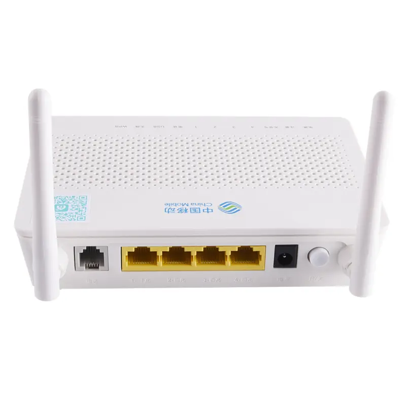

GM220
China Mobile GM220
Menu network, WLAN, SSID, dan security tersedia di aset.
Panduan modem
Panduan umum untuk modem China Mobile/CMCC seperti GM220, NV3A, dan XP663N. Cocok untuk membantu pelanggan mengganti SSID dan password.

Model tersedia
Menu network, WLAN, SSID, dan security tersedia di aset.

Memiliki tampilan dashboard dan menu WLAN terpisah.

Alur login dan network mirip modem CMCC lain.
Urutan setting
Gunakan panduan GM220 sebagai referensi utama. Untuk NV3A dan XP663N, nama menu bisa sedikit berbeda, tetapi urutan pengaturannya tetap login, network/WLAN, SSID, security, lalu save.
Hubungkan HP atau laptop ke WiFi modem China Mobile yang ingin diubah.
Akses http://192.168.1.1 dari browser, lalu masukkan akun login sesuai data teknisi.

Pilih menu Network, lalu masuk ke bagian WLAN untuk mengatur WiFi.

Masuk ke menu WLAN, lalu pilih SSID yang ingin diubah.

Pada bagian SSID, isi nama WiFi baru yang ingin digunakan pelanggan.

Pada menu Security, isi password baru minimal 8 karakter, lalu klik Apply atau Save.